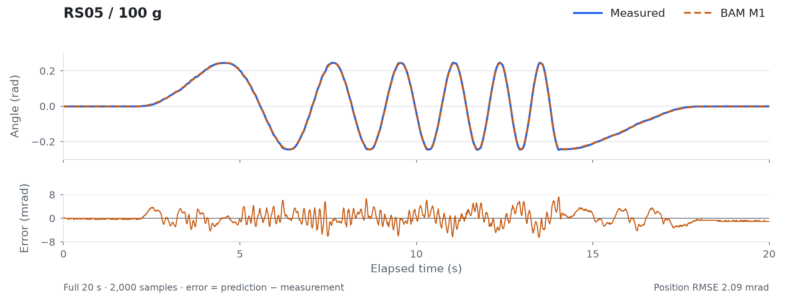

Run the offline example#
This tutorial checks your installation and shows what a fitted model can predict. You will replay three measured RS05 trajectories, produce a comparison plot, and read the error for each recording. Everything runs on the CPU, without a motor.
1. Install MotorFit#
Install uv and use Python 3.12. The following commands require GitHub access to the private source repository and an SSH key configured for that account.
git clone --recurse-submodules git@github.com:motorfit/motorfit.git
cd motorfit
uv sync --frozen
For an existing checkout, run git submodule update --init --recursive before
uv sync --frozen. This initializes BAM at the revision recorded by MotorFit.
Run the remaining commands from the repository root. uv run --no-sync uses the
environment just installed, including any optional dependencies you add later.
2. Replay the saved model#
uv run --no-sync motorfit demo \
--dataset tests/fixtures/offline/manifest.json \
--output outputs/demo
The command checks the input hashes, loads the saved M1 parameters, and simulates each complete recording with BAM. It does not fit new parameters. A successful run ends with:
PASS: 3 complete recordings; frozen references reproduced. outputs/demo
Use a new output directory when repeating the example, such as outputs/demo-02.
3. Read the results#
Open outputs/demo/comparison.png. Each panel overlays measured position with
the model prediction for one load. The other files are:
File |
What to inspect |
|---|---|
|
Position MAE and RMSE for each recording, in radians |
|
Input checks, model identity and the same metrics |
One |
Timestamps, measurements and predicted trajectories |
With the bundled inputs, the position errors are approximately:
Weight |
Motion |
MAE |
RMSE |
|---|---|---|---|
100 g |
Frequency sweep |
1.607 mrad |
2.089 mrad |
200 g |
Lift and release |
5.327 mrad |
5.944 mrad |
500 g |
Combined sinusoids |
1.219 mrad |
1.551 mrad |
One milliradian is 0.001 rad, about 0.057°. MAE is the mean absolute position
error; RMSE puts more weight on large errors.
The 100 g recording is shown below. The upper plot compares position; the lower plot shows prediction minus measurement, so small errors remain visible.


PASS means that the saved predictions were reproduced. It does not mean that
prediction error is zero: the 200 g release has a larger residual, discussed in
RS05 results.
4. Try a physics replay#
To run the same model through the included MuJoCo adapter:
uv sync --frozen --extra simulation
uv run --no-sync motorfit replay \
--dataset tests/fixtures/offline/manifest.json \
--engine mujoco --dt 0.002 --output outputs/mujoco
Read outputs/mujoco/metrics.csv. position_mae_rad compares MuJoCo with the
measurement; delta_bam_position_mae_rad compares MuJoCo with BAM. These answer
different questions. The evaluation guide
explains the files and comparison settings.
Where to go next#
To identify a motor, begin with the experiment workflow. The three example records are a demonstration subset, not a training dataset for a new motor. The complete RS05 study used 111 recordings.
If installation or the example fails:
Symptom |
Action |
|---|---|
GitHub reports |
Check repository access and your GitHub SSH key |
BAM source is missing |
Run |
Output directory already exists |
Select a new |
A SHA-256 check fails |
Restore the bundled fixture from Git; it has been changed or is incomplete |
MuJoCo cannot be imported |
Run |